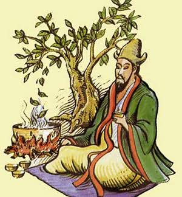
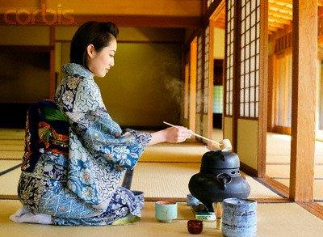
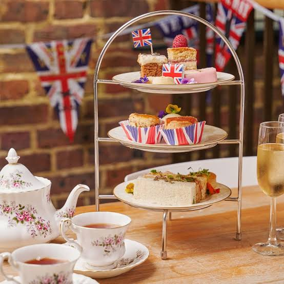

Historia herbaty liczy niemal pięć tysiącleci, a jej droga od leczniczego naparu z dzikich krzewów do drugiego najpopularniejszego napoju na świecie łączy legendy, filozofię zen oraz wielkie konflikty geopolityczne.
Mitologiczne korzenie w Chinach
Według najpopularniejszej chińskiej legendy historia herbaty rozpoczęła się w 2737 roku p.n.e. Mityczny władca i zielarz, cesarz Shennong, odpoczywał pod dzikim krzewem (Camellia sinensis). Gdy jego słudzy gotowali wodę pitną, podmuch wiatru strącił do kociołka kilka liści. Zabarwiony napar zachwycił cesarza aromatem oraz właściwościami orzeźwiającymi.
Przez stulecia liście herbaty traktowano przede wszystkim jako lekarstwo i dodatek do potraw – gotowano je z solą, imbirem, skórką pomarańczy, a nawet cebulą. Powszechnym napojem codziennym stała się dopiero za rządów dynastii Tang (618–907 n.e.). W tym okresie pisarz Lu Yu stworzył pierwsze monumentalne dzieło poświęcone tej roślinie – Cha Jing (Święta księga herbaty
), kodyfikując zasady jej uprawy, zbioru, parzenia oraz etykietę picia.
Ewolucja obróbki liści wyznaczała kolejne epoki w Chinach:
- Dynastia Tang: sprasowane kostki herbaciane mielone i gotowane z solą.
- Dynastia Song (960–1279): sproszkowana zielona herbata ubijana bambusową miotełką w misce na gęstą pianę (metoda, która dała początek japońskiej matchy).
- Dynastia Ming (1368–1644): odejście od sprasowanych kostek na rzecz sypkich liści zalewanych wrzątkiem w imbrykach, co zapoczątkowało współczesny sposób parzenia.

Droga do Japonii i sztuka zen
W IX wieku buddyjscy mnisi przywieźli nasiona herbaty z Chin do Japonii. Początkowo napój towarzyszył medytacjom w klasztorach, pomagając mnichom zachować czujność podczas wielogodzinnych czuwań.
W XVI wieku mistrz Sen no Rikyū ukształtował japońską ceremonię parzenia herbaty – chanoyu (lub sadō – droga herbaty
). Rytuał oparto na czterech cnotach: harmonii (wa), szacunku (kei), czystości (sei) oraz spokoju umysłu (jaku). Z prostego aktu picia herbaty uczyniono formę medytacji i sztuki użytkowej.

Podbój Europy i brytyjski rytuał
Pierwsze ładunki liści dotarły do Europy na początku XVII wieku za sprawą kupców holenderskich, a niedługo później portugalskich. Z racji wysokiej ceny herbata była towarem ściśle luksusowym, dostępnym wyłącznie dla dworów królewskich i arystokracji.
Do Anglii herbata trafiła w latach 50. XVII wieku, a jej popularność eksplodowała po ślubie króla Karola II z portugalską księżniczką Katarzyną Bragança, która wniosła zwyczaj picia herbaty na angielski dwór.
W XIX wieku księżna Bedford, Anna Maria Russell, spopularyzowała rytuał Afternoon Tea (popołudniowej herbatki). Długie przerwy między obiadem a późną kolacją wywoływały u niej osłabienie, dlatego około godziny piątej kazała podawać sobie dzbanek herbaty z lekkimi przekąskami. Zwyczaj ten błyskawicznie podchwyciła brytyjska elita, a później całe społeczeństwo.

Wojny, szpiegostwo i plantacje w Indiach
Wzrost popytu na herbatę w Europie zderzył się z chińskim monopolem handlowym – dynastia Qing żądała za liście wyłącznie płatności w srebrze. Doprowadziło to do dwóch kluczowych momentów w historii nowożytnej:
- Boston Tea Party (1773): Brytyjskie cła na herbatę wywołały bunt amerykańskich kolonistów, którzy zatopili transport w porcie w Bostonie, dając impuls do wybuchu wojny o niepodległość Stanów Zjednoczonych.
- Wojny opiumowe (1839–1860): Aby zrównoważyć odpływ srebra, Brytyjska Kompania Wschodnioindyjska zaczęła nielegalnie szmuglować do Chin opium produkowane w Indiach, co wywołało wyniszczający konflikt zbrojny.
Chcąc uniezależnić się od Chin, Brytyjczycy wysłali botanika Roberta Fortune’a na tajną misję szpiegowską. W przebraniu chińskiego kupca wykradł on sadzonki Camellia sinensis, nasiona oraz tajemnice obróbki liści. Brytyjczycy założyli wielkie plantacje w indyjskich prowincjach Asam i Dardżyling oraz na Cejlonie (dzisiejsza Sri Lanka), co uczyniło herbatę towarem masowym i globalnym.
Dziś, obok tradycyjnych odmian liściastych – białej, zielonej, oolong, czarnej i fermentowanej Pu-erh – herbata pozostaje trwałym elementem kultury kulinarnej i społecznej na każdym kontynencie.